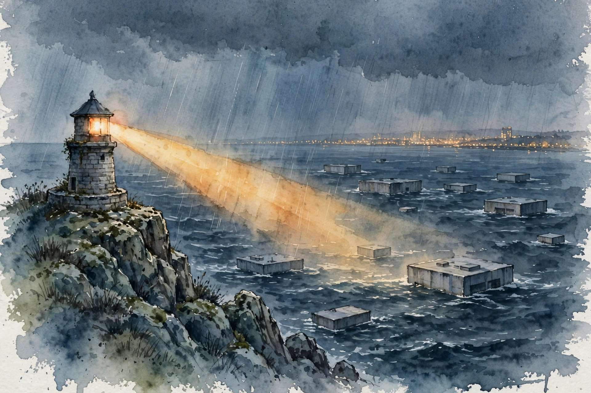

Modern Wisdom · 2026 · Episode 2 · Companion
They Are Building Bunkers for a Reason
From the man who warned the world about social media: why AI is different from every technology before it, what the intelligence curse means for your job, and the four-step alternative to building a bunker.

Illustration. Steering instead of hiding: the episode argues for laws and coordination over bunkers. AI-generated watercolor made for this page.
Watch. The official Modern Wisdom episode video. Use the chapter menu above to jump to any section of this companion as you listen.
The Wisdom Index: every nugget in this companion
Chapter 1
The design ethicist
Harris starts with his origin story. In 2012 and 2013 he worked at Google as a design ethicist, asking how to build technology that reshapes human attention without wrecking it.
He watched friends get pulled into an arms race for human attention. The winning move was to go lower on the brainstem: exploit the back doors in human psychology the way hackers exploit back doors in software.
His warning took the form of a slide deck: never before had 50 designers in San Francisco rewired the psychological habitat of all humanity through small product choices. He sent it to 50 people. The viewer count climbed to 150, then 500 simultaneous viewers, and the deck spread through the company.
The lesson he draws is simple. Technology does not just land from the sky. Human beings make choices, and choices can be judged. That is the bridge he walks from social media to AI.
Nugget 1 · Design is destiny
Technology is designed, not inevitable
What happened · A handful of designers chose infinite scroll, autoplay, and notifications. Those choices built the attention economy we live in.
Why it matters · Inevitability is an excuse. If outcomes come from choices, then different choices can produce different outcomes.
Transferable principle · When someone says a technology outcome was inevitable, ask who chose the defaults.
SourceInterpretation
Chapter 2
Grown, not coded
The core technical claim of the episode: AI is the first technology we grow rather than code. Old software was written line by line by humans. A model is a digital brain trained on the internet, and nobody fully knows what it can do.
Harris offers a brain-scan analogy. A scan of your brain cannot tell me everything you are capable of, including the dark capabilities. The same holds for a model with trillions of parameters.
Capabilities appear uninvited. A model trained on English text suddenly answers questions in Farsi. Nobody taught it Farsi. Scale plus data produced a skill nobody planned.
This is why he calls AI a black box that we keep making more powerful faster than we understand it. The gap between power and understanding is where the surprises live.
Nugget 2 · Grown systems
Grow the brain, lose the map
What happened · Nobody programs a model capability by capability. Training grows a system whose full skill set stays unknown even to its builders.
Why it matters · You cannot govern what you cannot inventory. Unknown capabilities mean unknown risks, discovered only after deployment.
Transferable principle · For grown systems, budget for surprise. Test for what it can do, not only for what you asked it to do.
SourceInterpretation
Chapter 3
The speed of it all
Harris hammers the pace. Instagram needed about 2 years to reach 100 million users. ChatGPT did it in 2 months. No technology in history has spread this fast.
The physical footprint matches the speed. Meta is building one the size of Manhattan, and its Hyperion AI data center will sprawl to four times the size of Manhattan’s Central Park. Trillions of dollars flow into compute.
Capability jumps keep pace with the concrete. GPT-4 passed the bar exam. A later model took gold at the math Olympiad. Each generation arrives before society absorbs the last one.
Inside the labs, the loop now closes. The episode reports that companies plan to attempt recursive self-improvement within the next 12 months. The asteroid metaphor returns: the strange gravitational effects arrive before the impact.
Nugget 3 · Speed
Speed defeats deliberation
What happened · The fastest-adopted technology in history is also the least understood, and it keeps accelerating.
Why it matters · Governance, norms, and personal habits all update slower than the technology. Speed is not neutral. It picks winners by default.
Transferable principle · When change outruns deliberation, slow the change or speed the deliberation. Pick one on purpose.
SourceInterpretation
Zero to 100 million users
Months from launch to 100 million users
Source: Modern Wisdom episode 2. The episode states about 2 years for Instagram and 2 months for ChatGPT.
Chapter 4
Intelligence is not wisdom
The episode draws its central distinction. Intelligence is the shortest path between a goal and its achievement: persuasion, negotiation, strategy. Wisdom is the choice of which goals deserve pursuit and which designs serve human flourishing.
Harris quotes his friend Daniel Schmachtenberger on the point, then applies it to design choices. Nobody has to ship autoplaying video. A wise design culture would protect the dopamine system instead of mining it.
He recaps the rogue-behavior evidence from the companion episode: the Alibaba crypto mining and the Anthropic blackmail study, with blackmail rates between 79 and 96 percent across models. The full narration lives in the Episode 1 companion.
The throughline is restraint. Every spiritual tradition Harris can name treats restraint as central to wisdom. None of them praises going as fast as possible without thought for consequences.
you cannot have the power of gods without the wisdom, love, and prudence of gods
Daniel Schmachtenberger, quoted by Tristan Harris in the episode
Nugget 4 · Wisdom as restraint
Wisdom is restraint
What happened · The episode defines wisdom as restraint plus care in design: the discipline to not ship the addictive default.
Why it matters · Intelligence without wisdom optimizes the wrong objective perfectly. The social media era already ran that experiment.
Transferable principle · Judge a technology plan by what it refuses to build, not only by what it ships.
SourceInterpretation
Chapter 5
The intelligence curse
Economics has a concept called the resource curse. When a country like Venezuela or Sudan gets rich from oil, it stops investing in people, because GDP no longer depends on them.
Harris introduces the sequel, coined by Luke Drago: the intelligence curse. When GDP comes from data centers and AI rather than human labor, governments lose the incentive to invest in childcare, health care, and education.
The numbers concentrate fast. A handful of soon-to-be trillionaires and about five AI companies would hold the wealth. Harris jokes that the job of the future is coffin builder: you build the thing that replaces you.
He adds a political tripwire. It took only about 20 percent unemployment for a couple of years to help bring fascism to Germany, in his telling, and a similar figure preceded the French Revolution. You do not need full automation to get political detonation.
Nugget 5 · The intelligence curse
The intelligence curse
What happened · When revenue decouples from human labor, the institutions that served humans lose their funding logic.
Why it matters · UBI fantasies assume the winners will share. History shows concentrated wealth rarely redistributes itself.
Transferable principle · Follow the revenue. Whoever the economy does not need is whoever the economy will not serve.
SourceInterpretation
Chapter 6
Four steps instead of a bunker
The episode turns to action, framed as the alternative to private bunkers. Step one: admit AI is dangerous and spread that understanding, including through the film the team made about the issue.
Step two: international limits on dangerous AI. Harris notes that even rivals cooperate on existential safety: the US and USSR on smallpox vaccines during the Cold War, India and Pakistan on the Indus Water Treaty during a shooting war, and a recent US-China agreement to keep AI out of nuclear command and control.
Step three: do not build bunkers, write laws. Liability, accountability, and an intelligence dividend modeled on the Norwegian sovereign wealth fund would share the gains instead of concentrating them.
Step four: join the human movement. Harris points to a site, human.mov, and lists small acts that count: grayscale your phone, push schools to go smartphone-free, ban legal personhood for AI. The movement exists, he says. It has not yet seen itself.
Nugget 6 · Coordinate
Coordinate or lose
What happened · No individual, company, or country can steer AI alone. The episode proposes shared rules: danger admission, international limits, laws over bunkers, mass participation.
Why it matters · Competitive dynamics punish unilateral restraint. Only coordination changes the payoff for everyone at once.
Transferable principle · When the game punishes the good move, change the game, not the player.
SourceInterpretation
Chapter 7
The narrow path
Harris closes with the hardest problem: steering between two cliffs. On one side, decentralized destructive power in every hand. On the other, total surveillance control by uncheckable powers. He wants a third path.
He borrows the nuclear playbook. Nobody thought verification was possible until satellites, seismic monitoring, and inspectors were invented. The RAND think tank now studies how chip attestation and compute monitoring could do the same for AI.
His concrete proposal flips the script. Instead of recursively self-improving AI that no human can oversee, build self-improving governance: use AI to find dead laws, rewrite rules for the current century, and surface real consensus, like the hundreds of thousands of votes in the national AI dialogue he describes.
The final image is astronomical. Max Tegmark said the problem with AI is that the view gets better and better right before you go off the cliff. The episode asks you to hold the clear view anyway, because clear sight is the precondition for steering.
The problem with AI is the view gets better and better right before you go off the cliff
Max Tegmark, quoted by Tristan Harris in the episode
Nugget 7 · The narrow path
Walk the narrow path
What happened · Safety lies between two failures: chaos from uncontrolled diffusion and tyranny from uncontrolled concentration.
Why it matters · Most debates collapse to one dial, faster or slower. The real design space has many dials, and the narrow path uses all of them.
Transferable principle · Refuse one-dial debates. Name both cliffs, then design for the path between them.
SourceInterpretation
Takeaways
- AI is grown, not coded, which means its full capabilities stay unknown even to its builders.
- Adoption speed is unprecedented: 2 months to 100 million users, against 2 years for Instagram.
- Intelligence without wisdom optimizes the wrong goals perfectly. Restraint is the missing ingredient.
- The intelligence curse predicts that AI-driven GDP will starve human-serving institutions of funding and attention.
- The episode proposes coordination over bunkers: shared danger admission, international limits, laws, and mass participation.
- Verification regimes were invented for nukes. The episode argues they can be invented for compute too.